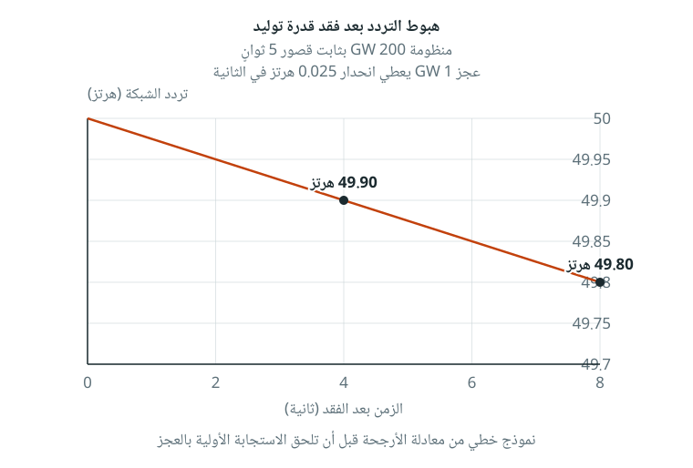

تردد الشبكة
Grid Frequency
معدّل دوران المولّدات المتزامنة الموصولة بالشبكة: 50 هرتز في أوروبا وآسيا وأفريقيا و60 في أمريكا الشمالية. انحرافه عن قيمته الاسمية يقيس اختلال التوازن اللحظي بين التوليد والحمل.
تردد الشبكة الكهربائية هو معدّل دوران المولّدات المتزامنة الموصولة بها، ويُقاس بالهرتز: 50 في أوروبا وآسيا وأفريقيا، و60 في أمريكا الشمالية وجزء من آسيا. ليس ثابتًا بالطبع، بل يُصحَّح باستمرار ليبقى داخل نطاق ضيق حول قيمته الاسمية، لأن كل ساعة كهربائية وكل محرّك متزامن يعتمد عليه.
التردد مؤشر على التوازن اللحظي: إذا زاد الحمل على التوليد تباطأت الآلات وانخفض التردد، وإذا زاد التوليد تسارعت وارتفع. لا يوجد مخزون في الشبكة نفسها، فكل كيلوواط يُستهلك يجب أن يُولَّد في اللحظة ذاتها، والفرق اللحظي يُغطّى من الطاقة الحركية الدوّارة بثمن انحراف التردد.
كيف تعمل الظاهرة؟
عند فقد وحدة توليد يصبح الحمل أكبر من التوليد بمقدار العجز. المحرّكات المتزامنة تُبطئ لأن العزم الكهربائي عليها يتجاوز العزم الميكانيكي الداخل، فتُستمد الطاقة من عزم القصور الذاتي للدوّار. يُعبَّر عن ذلك بمعادلة الأرجحة: 2H·S/f₀ · df/dt = P_m − P_e، والثابت H هو عزم القصور المعيَّر بالثواني. بعد ثوانٍ تبدأ المنظّمات بالاستجابة وترفع التوليد، ثم يوزّع نظام التحكم الآلي بالحمل الزيادة على وحدات أخرى على مدى دقائق.
العلاقة بالأرقام
تردد 50 Hz يعني دورة كل 20 ms، و60 Hz دورة كل 16.67 ms. منظومة بسعة 200 GW وثابت قصور H = 5 s تفقد 1 GW: df/dt = −1×50 ÷ (2×5×200) = −0.025 Hz/ث. أي أن التردد يهبط 0.05 Hz في ثانيتين و0.2 Hz في ثماني ثوان قبل أن تلحق الاستجابة الأولية. طاقة القصور الكلية = H·S = 5 × 200 = 1,000 GJ، وهي ما يشتري ثوانيَ معدودة قبل أن يصبح الطلب على الاستجابة إلزاميًّا.
مفاهيم متقاربة
يُخلط بين التردد والجهد: التردد يعبّر عن توازن القدرة الفعلية بالكيلوواط، والجهد عن توازن القدرة غير الفعّالة بالكيلوفار. حقن مفاعلات في الشبكة يرفع الجهد ولا يعيد التردد. ويُخلط بين 50 و60 هرتز في الأجهزة الحسّاسة: محرّك 50 Hz على شبكة 60 Hz يدور أسرع 20% ويُحمَّل فوق طاقته. وخلط ثالث بين الانحراف العابر والانحراف الدائم: الأول يُصحَّح بالاستجابة الأولية في ثوانٍ، والثاني يعني خطأً في معايرة الساعة المرجعية ويُصحَّح تراكميًّا.
حدود التطبيق
معادلة الأرجحة بنموذج H ثابت تفترض آلات متزامنة مترابطة صلبةً، ولا تصف شبكة يغلب عليها العواكس كالشمس والرياح والتخزين بلا قصور طبيعي؛ هنا يصبح معدل تغيّر التردد أسرع بكثير وتُستخدم قصور صناعي برمجيًّا. كذلك لا تصف المعادلة استجابة الحمل للتردد، وهي استجابة تخفّف العجز بنسب تصل إلى عدة أجزاء مئوية لكل هرتز. والتردد لا يُقاس عند نقطة واحدة ممثِّلة في شبكات مترابطة واسعة، بل توجد فروق طورية بين مناطقها.

| الكمية | القيمة | المصدر |
|---|---|---|
| تردد الشبكة الأوروبية | 50 هرتز | [1] |
| مدة الدورة الواحدة عند 50 هرتز | 20 مللي ثانية | [1] |
| معدل تغيّر التردد بعد فقد 1 GW | 0.025 هرتز/ثانية | [2] |
| طاقة القصور الكلية لمنظومة 200 GW عند H = 5 ث | 1,000 غيغاجول | [2] |
المصادر
- 1 Time and Frequency Division — NIST. www.nist.gov/pml/time-and-frequency-division · اطُّلع عليه 2026-11-16
- 2 Electricity in the United States — U.S. Energy Information Administration. www.eia.gov/energyexplained/electricity/electricity-in-the-us.php · اطُّلع عليه 2026-11-16
- 3 How electricity is generated — U.S. Energy Information Administration. www.eia.gov/energyexplained/electricity/how-electricity-is-generated.php · اطُّلع عليه 2026-11-16
استشهد بهذا المصطلح
الصيغتان مبنيتان من بيانات الصفحة نفسها: العنوان والتاريخ ورابط النسخة المنشورة.
تردد الشبكة — Grid Frequency. (2026). ديوان المعرفة — انفراد. https://infiradev.com/diwan/terms/grid-frequency.html
@misc{grid-frequency2026,
title = {تردد الشبكة},
titleaddon = {Grid Frequency},
howpublished = {{ديوان المعرفة — انفراد} — مرجع علمي عربي},
year = {2026},
url = {https://infiradev.com/diwan/terms/grid-frequency.html},
urldate = {2026-11-16},
note = {مراجعة علمية: مراجعة آلية — ديوان المعرفة (روابط المصادر + عقد المحتوى + وجود الرسم) 2026-11-16}
}
راجعه: مراجعة آلية — ديوان المعرفة (روابط المصادر + عقد المحتوى + وجود الرسم) 2026-11-16 · 2026-11-16 · آخر تحديث 2026-11-16